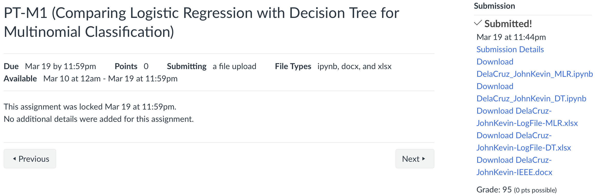
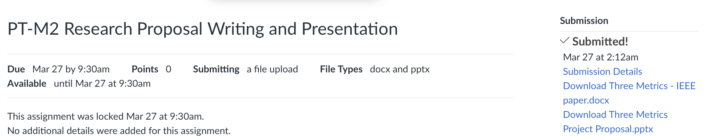

PT-M1: Comparing Logistic Regression with Decision Tree for Multinomial Classification
Actvitiy 2 - Research Proposal Writing and Presentation
In this Midterm Deliverables I gained a lot of knowledge. Start with, Comparing Logistic Regression with DT for Multinomial Classification, Both classification model can easily configure to enhance their performance. However, I learned that Decision Tree outperformed Logistic Regression because of handling with complex, non-linear relationships, high-dimensional data, and the presence of outliers or missing values. Followed by, Research Proposal Prensetation where I learned how can I apply my knowledge that I learned in real-world problem scenario.
Midterm Examination
I know I gave my best in this examination, and I’m proud of the effort I put in. However, I also realized that I need to improve in clearly explaining my ideas and insights. It’s not a bad start for my first try — it’s a valuable learning experience that shows me where to grow next.
To summarize my midterm term in ITE 3 under the guidance of Dr. Raga, I can say it has been a meaningful and motivating experience. I’ve come to understand and adapt to his unique teaching style, which encourages independent exploration and critical thinking. This approach has helped me learn more efficiently and stay motivated throughout the course. The exercises were insightful and helped deepen my understanding of algorithms like Multinomial and Binary Logistics Regression and Decision tree. As well as, help me to understand what is the problem in real-world and how to solve it using machine learning